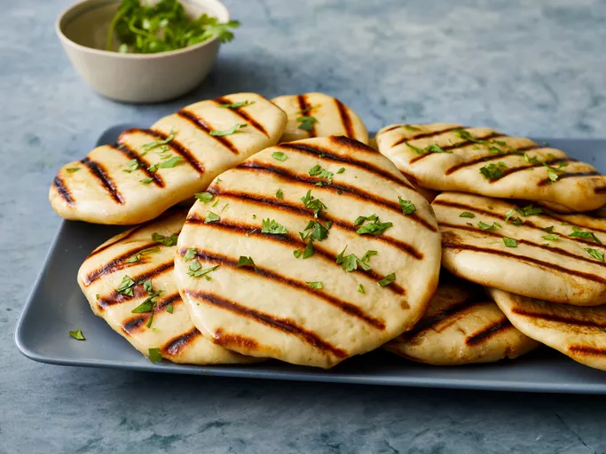

Naan

Description
This homemade naan recipe makes soft, chewy naan with a buttery taste. It is the best I have tasted outside of an Indian restaurant. Simply delicious eaten warm brushed with melted butter or served with your favorite curry.
Warm, buttery homemade naan will take your weeknight dinners to the next level. Whip up restaurant-quality bread with toasted edges and a pillowy interior. This easy naan recipe yields deliciously puffy, garlicky results that are the perfect accompaniment to curries, soups, and dips. Learn to make foolproof naan with this 5-star recipe — plus, learn how to store and what to serve with this popular bread.
Ingredients
- 1 package active dry yeast
- 1 cup warm water
- quater cup white sugar
- 3 tablespoons milk
- 1 large egg, beaten
- 2 teaspoons salt
- 4 and half cups bread flour
- quater cup butter, melted
Steps
- Dissolve yeast in warm water in a large bowl. Let stand about 10 minutes, until frothy.
- Meanwhile, generously oil a large bowl.
- Stir sugar, milk, egg, and salt into the yeast mixture. Mix in enough flour to make a soft dough.
- Knead dough on a lightly floured surface until smooth, 6 to 8 minutes.
- Place dough in the prepared oil, cover with a damp cloth, and let rise until doubled in size, about 1 hour.
- Punch down dough on a lightly floured surface, and knead in garlic. Pinch off small handfuls of dough about the size of a golf ball; you should have about 14. Roll each piece into a ball and place on a tray. Cover with a towel, and allow to rise until doubled in size, about 30 minutes.
- Meanwhile, preheat a large grill pan over high heat.
- Roll each piece of dough into a thin circle.
- Brush some melted butter on the preheated grill pan. Place a few pieces of dough in the pan (as many as you can fit) and cook until puffy and lightly browned, 2 to 3 minutes. Brush butter onto the uncooked sides, flip, and cook until browned, 2 to 4 more minutes. Remove from the grill and repeat to cook the remaining naan.
- Enjoy!